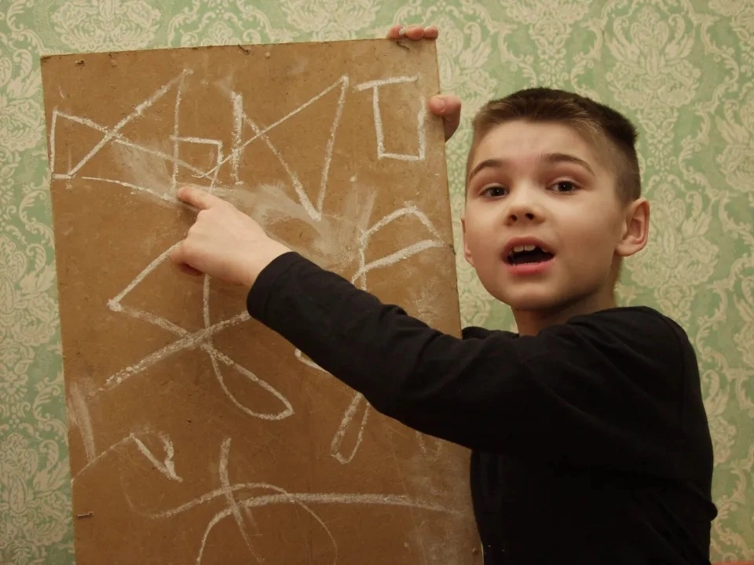
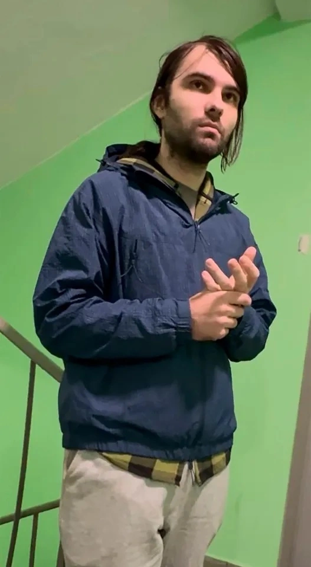

Cuộc sống hiện tại của thần đồng 'đến từ sao Hỏa'
Từng gây chấn động với tuyên bố đến từ sao Hỏa để cứu Trái Đất, thần đồng Boris Kipriyanovich nay sống kín tiếng, làm lao động chân tay để mưu sinh.
Sinh năm 1996 tại Volgograd, Boris Kipriyanovich từng là tâm điểm của truyền thông thế giới vào đầu những năm 2000. Cậu bé bộc lộ tố chất thiên tài từ rất sớm,
15 ngày tuổi đã biết giữ thẳng đầu, 4 tháng tuổi biết nói và một tuổi đã có thể đọc báo. Đến năm hai tuổi, trí nhớ phi thường và kỹ năng ngôn ngữ của Boris khiến
các giáo viên mầm non phải kinh ngạc.
Ở tuổi lên 2, Boris gây sốc khi tự nhận mình là "người sao Hỏa". Cậu kể từng tự lái tàu vũ trụ đến Trái Đất và được tái sinh để bảo vệ nền văn minh nhân
loại khỏi một cuộc chiến tranh không gian hạt nhân. Lên 3 tuổi, Boris đọc vanh vách tên các hành tinh và giải thích các khái niệm khoa học phức tạp, dù gia
đình chưa từng dạy. Cậu thường ngồi thiền định và khẳng định bản thân vẫn giữ trọn vẹn ký ức về tiền kiếp ngoài vũ trụ.

Boris có thể kể tên tất cả các hành tinh khi mới ba tuổi.
Đỉnh điểm của sự chú ý là khi Boris đưa ra lời tiên tri về những thảm họa lớn sẽ tàn phá Trái Đất vào năm 2009 và 2013, khiến "chỉ một số ít người" sống sót. Tuy
nhiên, khi cả hai cột mốc này trôi qua mà không có tận thế nào xảy ra, một làn sóng phẫn nộ đã bùng lên. Những người từng tin tưởng quay sang chỉ trích, gọi cậu là kẻ lừa đảo.
Áp lực dư luận buộc gia đình Boris phải chọn cách sống ẩn dật. Suốt nhiều năm, trên mạng xã hội liên tục xuất hiện tin đồn cậu bé "sao Hỏa" đã mất tích hoặc bị bắt đi nghĩa vụ
quân sự.
Tuy nhiên, theo thông tin mới nhất từ truyền thông Nga, Boris hiện 29 tuổi, đang sống trong một căn hộ chung cư ở phía bắc thủ đô Moscow cùng mẹ (một bác sĩ) và em trai 16
tuổi.

Boris, 29 tuổi, đang sống tại nhà riêng ở Moscow.
Trái với kỳ vọng về một vĩ nhân thay đổi thế giới, con đường học vấn của Boris khá dang dở. Anh chỉ hoàn thành chương trình lớp 9, từng theo học tại ba trường cao đẳng nhưng
đều bỏ dở và không có bằng tốt nghiệp. Để trang trải cuộc sống, thần đồng năm xưa phải làm các công việc chân tay như dỡ hàng tại kho, dọn dẹp ở hiệu sách và xử lý đơn cho sàn
thương mại điện tử.
Lên tiếng lần đầu tiên sau gần hai thập kỷ im lặng, Boris thừa nhận thách thức lớn nhất của mình không phải là cứu nhân loại hay du hành thời gian, mà đơn giản là cách xoay xở
để tồn tại trong cuộc sống đời thường. Dù vẫn khẳng định những "hình ảnh sống động" thời thơ ấu là có thật, anh từ chối giải thích thêm về ký ức sao Hỏa.
Chàng trai 29 tuổi cho biết không còn muốn nhắc lại quá khứ. Mục tiêu duy nhất của anh lúc này là làm việc chăm chỉ để kiếm tiền phụ giúp gia đình.
Trường hợp của Boris phản ánh một hội chứng tâm lý khá phổ biến ở các cựu thần đồng: hội chứng 'burnout' (kiệt sức). Sự kỳ vọng quá mức của người lớn và áp lực truyền thông từ khi
còn nhỏ thường khiến họ mất phương hướng lúc trưởng thành, cuối cùng phải chọn một cuộc đời bình thường, thậm chí là làm công việc tay chân, để tìm lại sự bình yên.